8Direct Alignment Algorithms
- The derivation of the first DAA, Direct Preference Optimization (DPO), from first
- principles
- Intuitions for DPO and other related algorithms
- What to consider when using DAAs yourself
Direct Alignment Algorithms (DAAs) allow one to update models to solve the same RLHF objective, shown again in eq. 8.1, without ever training an intermediate reward model or using reinforcement learning optimizers. It solves the same preference learning problem we’ve been studying (with literally the same data!), in order to make language models more aligned, smarter, and easier to use. The lack of a reward model and online optimization makes DAAs far simpler to implement, reducing compute spent during training and making experimentation easier. This chapter details the complex mathematics that were done to derive these algorithms, and then shows that the sometimes tedious derivations result in simple implementations.
The most prominent DAA and one that catalyzed an entire academic movement of aligning language models is Direct Preference Optimization (DPO) [1]. At its core, DPO is using gradient ascent to solve the same constrained RLHF objective (see Chapter 3):
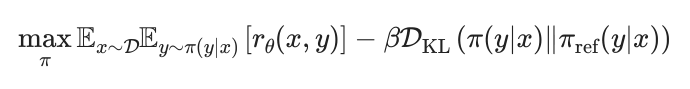
Since its release in May of 2023, after a brief delay where the community figured out the right data and hyperparameters to use DPO with (specifically, surprisingly low learning rates), many popular models have used DPO or its variants, from Zephyr-β kickstarting it in October of 2023 [2], Llama 3 Instruct [3], Tülu 2 [4] and 3 [5], Nemotron 4 340B [6], and others. Technically, Sequence Likelihood Calibration (SLiC-HF) was the first, modern direct alignment algorithm released [7], but it did not catch on due to a combination of factors (unwinding the adoption of research methods is always a tricky task).
The most impactful part of DPO and DAAs is lowering the barrier of entry to experimenting with language model post-training – it uses less compute, is easier to implement from scratch, and is easier to get working on both toy and production examples.
Throughout this chapter, we use x to denote prompts and y to denote completions. This notation is common in the language model literature, where methods operate on full prompt-completion pairs rather than individual tokens.
#8.1 Direct Preference Optimization (DPO)
Here we explain intuitions for how DPO works and re-derive the core equations fully.
#8.1.1 How DPO Works
DPO at a surface level is directly optimizing a policy to solve the RLHF objective. The loss function for this, which we will revisit below in the derivations, is a pairwise relationship of log-probabilities. The loss function derived from a Bradley-Terry reward model follows:
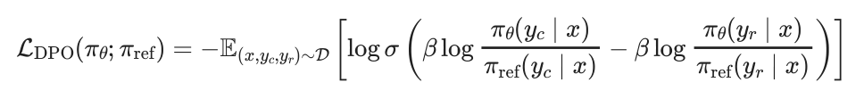
Throughout, β is a hyperparameter balancing the reward optimization to the KL distance between the final model and the initial reference (i.e. balancing over-optimization, as a crucial hyperparameter to using DPO correction). This relies on the implicit reward for DPO training that replaces using an external reward model, which is a log-ratio of probabilities:
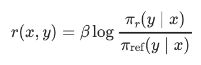
where πr(y ∣x) is the exact, optimal reward policy that we are solving for. This comes from deriving the Bradley-Terry reward with respect to an optimal policy (shown in eq. 8.17), as shown in the Bradley-Terry model section of Chapter 5. Essentially, the implicit reward model shows “the probability of human preference data in terms of the optimal policy rather than the reward model.”
Let us consider the loss shown in eq. 8.2 that the optimizer must decrease. Here, the loss will be lower when the log-ratio of the chosen response is bigger than the log-ratio of the rejected response (normalized by the reference model). In practice, this is a sum of log-probabilities of the model across the sequence of tokens in the data presented. Hence, DPO is increasing the delta in probabilities between the chosen and rejected responses.
With the reward in eq. 8.3, we can write the gradient of the loss to further interpret what is going on:
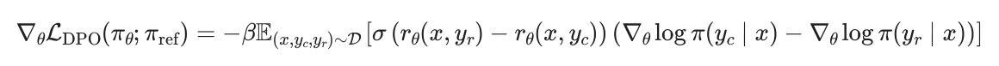
Here, the gradient solves the above objective by doing the following:
- The first term within the sigmoid function, σ(⋅), creates a weight of the parameter update from 0 to 1 that is higher when the reward estimate is incorrect. When the rejected sample is preferred over the chosen, the weight update should be larger!
- Second, the terms in the inner brackets [⋅] increase the likelihood of the chosen response yc and decrease the likelihood of the rejected yr.
- These terms are weighted by β, which controls how the update balances ordering the completions correctly relative to the KL distance.
The core intuition is that DPO is fitting an implicit reward model whose corresponding optimal policy can be extracted in a closed form (thanks to gradient descent and our ML tools). The closed form of the equation means that it is straightforward to implement the exact gradient, rather than needing to reach it by proxy of training a reward model and sampling completions to score. What is often misunderstood is that DPO is learning a reward model at its core, hence the subtitle of the paper Your Language Model is Secretly a Reward Model. It is easy to confuse this with the DPO objective training a policy directly, hence studying the derivations below is good for a complete understanding.
With the implicit reward model learning, DPO is generating an optimal solution to the RLHF objective given the data in the dataset and the specific KL constraint in the objective β. Here, DPO solves for the exact policy given a specific KL distance because the generations are not online as in policy gradient algorithms – a core difference from the RL methods for preference tuning. In many ways, this makes the β value easier to tune with DPO relative to online RL methods, but crucially and intuitively the optimal value depends on the model being trained and the data training it.
At each batch of preference data, composed of many pairs of completions ychosen ≻yrejected, DPO takes gradient steps directly towards the optimal solution. It is far simpler than policy gradient methods.
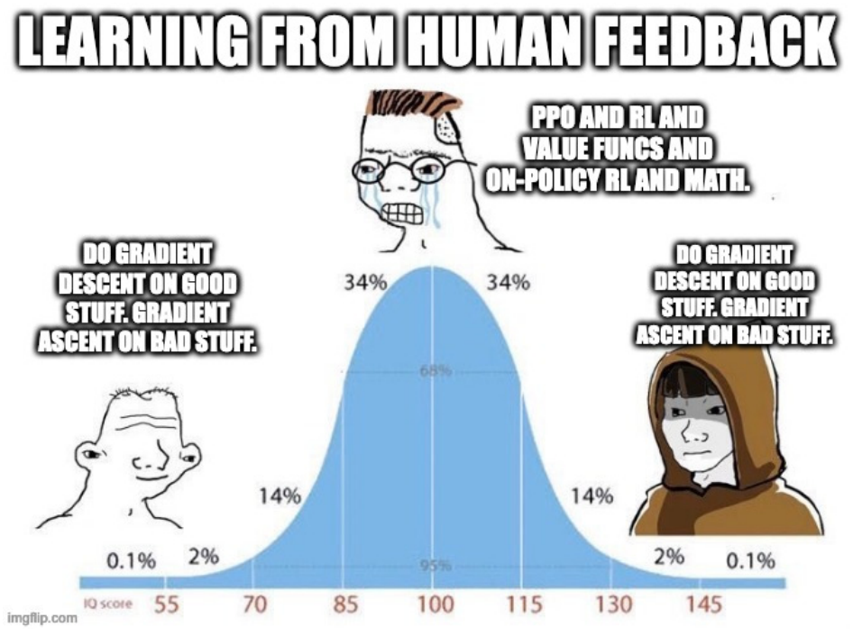
#8.1.2 DPO Derivation
The DPO derivation takes two primary parts. First, the authors show the form of the policy that optimally solved the RLHF objective used throughout this book. Next, they show how to arrive at that solution from pairwise preference data (i.e. a Bradley Terry model).
#1. DERIVING THE OPTIMAL RLHF SOLUTION
To start, we should consider the RLHF optimization objective once again, here indicating we wish to maximize this quantity:

Here, the dual expectation only applies to the sampling to compute the expected reward, as the KL term is still an analytical expression. First, let us expand the definition of KL-divergence. Recall that DKL(π∥πref) = Ey∼π [logπ(y|x)πref(y|x) ], where the π(y|x) weighting in the sum becomes the sampling distribution. Since both terms now share the same expectation over y ∼π(y|x), we can combine them:
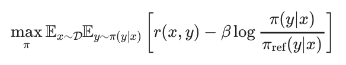
Next, pull the negative sign out of the difference in brackets. To do this, split it into two terms:
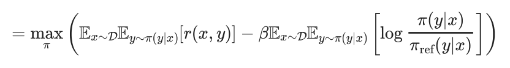
Then, remove the factor of −1 and β,
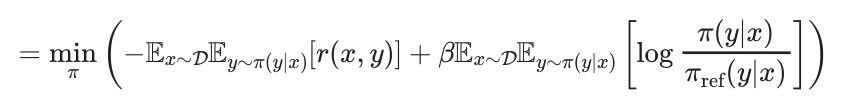
Divide by β and recombine:
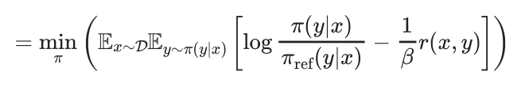
Next, we must introduce a partition function, Z(x):
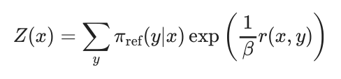
The partition function acts as a normalization factor over the reference policy, summing over all possible responses y to a prompt x. With this substituted in, we obtain our intermediate transformation:
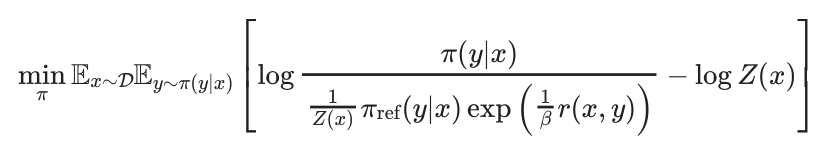
To see how this is obtained, consider the internal part of the optimization in brackets of eq. 8.9:
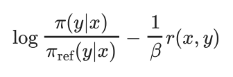
Then, add log Z(x) −log Z(x) to both sides:
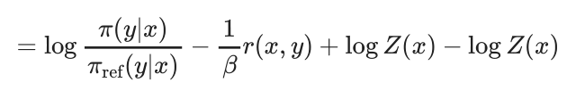
Then, we group the terms:
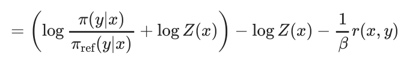
With log(x) + log(y) = log(x ⋅y) (and moving Z to the denominator), we get:
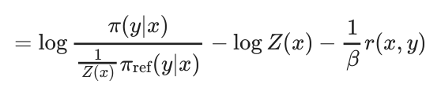
Next, we expand 1β r(x, y) to log exp(1β r(x, y) and do the same operation to get eq. 8.11. With this optimization form, we need to actually solve for the optimal policy π∗. To do so, let us consider the above optimization as a KL distance:
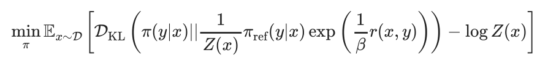
Since the partition function Z(x) does not depend on the final answer, we can ignore it. This leaves us with just the KL distance between our policy we are learning and a form relating the partition, β, reward, and reference policy. The Gibb’s inequality tells this is minimized at a distance of 0, only when the two quantities are equal! Hence, we get an optimal policy:
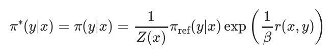
#2. DERIVING DPO OBJECTIVE FOR BRADLEY TERRY MODELS
To start, recall from Chapter 5 on Reward Modeling and Chapter 11 on Preference Data that a Bradley-Terry model of human preferences is formed as:
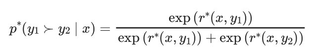
By manipulating eq. 8.17, we can solve for the optimal reward. First, take the logarithm of both sides:
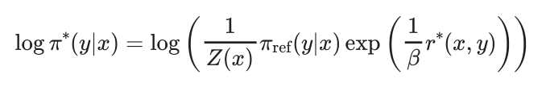
Expanding the right-hand side using log(abc) = log a + log b + log c:
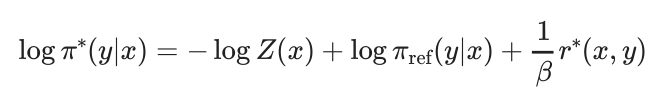
Rearranging to solve for r∗(x, y):
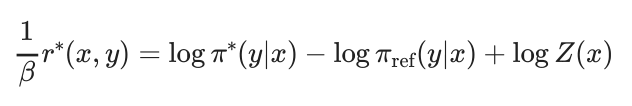
Multiplying both sides by β:
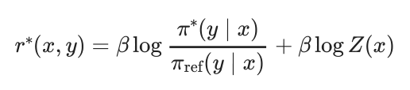
We then can substitute the reward into the Bradley-Terry equation shown in eq. 8.18 to obtain:
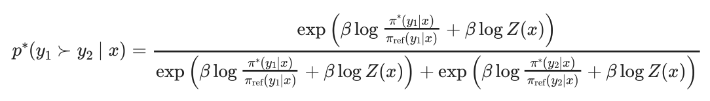
By decomposing the exponential expressions from e to ee and then cancelling out the terms elog(Z(x)), this simplifies to:
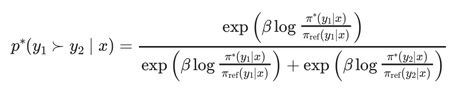
Then, multiply the numerator and denominator by exp (−β log(π∗(y1∣x)πref(y1∣x) ) to obtain:
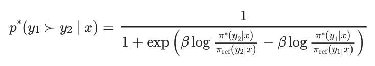
Finally, with the definition of a sigmoid function as σ(x) =11+e−x, we obtain:
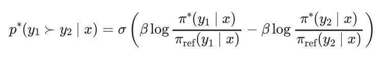
This is the loss function for DPO, as shown in eq. 8.2. The DPO paper has an additional derivation for the objective under a Plackett-Luce Model, which is far less used in practice [1].
#3. DERIVING THE BRADLEY TERRY DPO GRADIENT
We used the DPO gradient shown in eq. 8.4 to explain intuitions for how the model learns. To derive this, we must take the gradient of eq. 8.26 with respect to the model parameters.
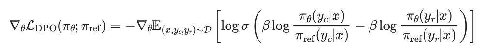
To start, this can be rewritten. We know that the derivative of a sigmoid function ddx σ(x) = σ(x)(1 −σ(x)), the derivative of logarithm ddx log x = 1x, and properties of sigmoid σ(−x) = 1 −σ(x), so we can reformat the above equation.
First, let u = β logπθ(yc|x)πref(yc|x) −β logπθ(yr|x)πref(yr|x) (the expression inside the sigmoid). Then, we have
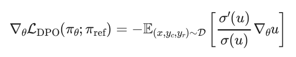
Expanding this and using the above expressions for sigmoid and logarithms results in the gradient introduced earlier:
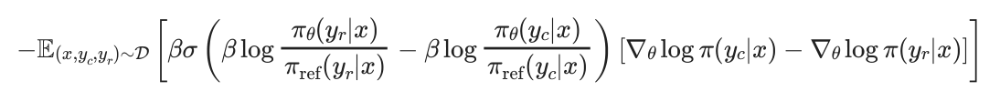
#8.2 Numerical Concerns, Weaknesses, and Alternatives
Many variants of the DPO algorithm have been proposed to address weaknesses of DPO. For example, without rollouts where a reward model can rate generations, DPO treats every pair of preference data with equal weight. In reality, as seen in Chapter 11 on Preference Data, there are many ways of capturing preference data with a richer label than binary. Multiple algorithms have been proposed to re-balance the optimization away from treating each pair equally.
- REgression to RElative REward Based RL (REBEL) adds signal from a reward model, as a margin between chosen and rejected responses, rather than solely the pairwise preference data to more accurately solve the RLHF problem [8].
- Conservative DPO (cDPO) and Identity Preference Optimization (IPO) address the overfitting by assuming noise in the preference data. cDPO assumes N percent of the data is incorrectly labelled [1] and IPO changes the optimization to soften probability of preference rather than optimize directly from a label [9]. Practically, IPO changes the preference probability to a nonlinear function, moving away from the Bradley-Terry assumption, with Ψ(q) = log (q1−q ).
- DPO with an offset (ODPO) “requires the difference between the likelihood of the preferred and dispreferred response to be greater than an offset value” [10] – do not treat every data pair equally, but this can come at the cost of a more difficult labeling environment.
Some variants to DPO attempt to either improve the learning signal by making small changes to the loss or make the application more efficient by reducing memory usage.
- Odds Ratio Policy Optimization (ORPO) directly updates the policy model with a pull towards the chosen response, similar to the instruction fine-tuning loss, with a small penalty on the chosen response [11]. This change of loss function removes the need for a reference model, simplifying the setup. The best way to view ORPO is DPO inspired, rather than a DPO derivative.
- Simple Preference Optimization SimPO makes a minor change to the DPO optimization, by averaging the log-probabilities rather than summing them (SimPO) or adding length normalization, to improve performance [12].
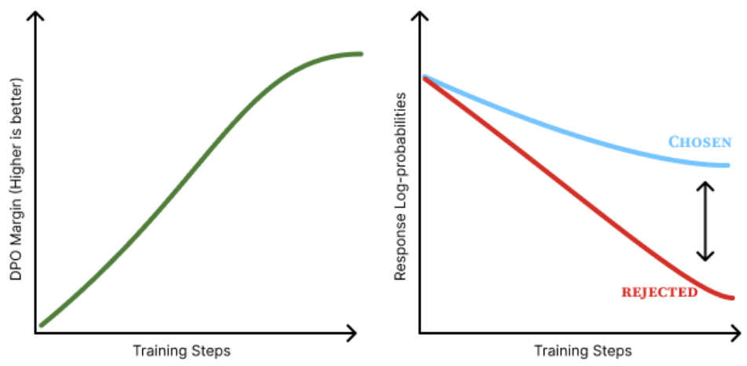
One of the core issues apparent in DPO is that the optimization drives only to increase the margin between the probability of the chosen and rejected responses. Numerically, the model reduces the probability of both the chosen and rejected responses, but the rejected response is reduced by a greater extent as shown in fig. 8.2. Intuitively, it is not clear how this generalizes, but work has posited that it increases the probability of unaddressed for behaviors – i.e. tokens that language model could generate, but are not in the distribution of the post-training datasets [13] [14]. Simple methods—such as Cal-DPO [15], which adjusts the optimization process, and AlphaPO [16], which modifies the reward shape— mitigate this preference displacement. In practice, the exact impact of this is not well known, but points to a potential reason why online methods can outperform vanilla DPO.
The largest other reason that is posited for DPO-like methods to have a lower ceiling on performance than online (RL based) RLHF methods is that the training signal comes from completions from previous or other models. Online variants of DPO alleviate these limitations by generating new completions and incorporating a preference signal at training time. Online DPO [17] samples generations from the current model, while Discriminator- Guided DPO (D2PO) [18] uses reward model relabelling to create new preference data on the fly, and many more variants exist.
There is a long list of other DAA variants, such as Direct Nash Optimization (DNO) [19] or Binary Classifier Optimization (BCO) [20], but the choice of algorithm is far less important than the initial model and the data used [5] [21] [22].
#8.3 Implementation Considerations
DAAs such as DPO are implemented very differently than policy gradient optimizers. The DPO loss, taken from the original implementation, largely can be summarized as follows [1]:
pi_logratios = policy_chosen_logps - policy_rejected_logps
ref_logratios = reference_chosen_logps - reference_rejected_logps
logits = pi_logratios - ref_logratios # also known as h_{pi_theta}^{y_w,y_l}
losses = -F.logsigmoid(beta * logits)
chosen_rewards = beta * (policy_chosen_logps - reference_chosen_logps).detach()
rejected_rewards = beta * (policy_rejected_logps -
reference_rejected_logps).detach()This can be used in standard language model training stacks as this information is already collated during the forward pass of a model (with the addition of a reference model).
In most ways, this is simpler and a quality of life improvement, but also they offer a different set of considerations.
- KL distance is static: In DPO and other algorithms, the KL distance is set explicitly by the β parameter that balances the distance penalty to the optimization. This is due to the fact that DPO takes gradient steps towards the optimal solution to the RLHF objective given the data – it steps exactly to the solution set by the β term. On the other hand, RL based optimizers take steps based on the batch and recent data.
- Caching log-probabilities: Simple implementations of DPO do the forward passes for the policy model and reference models at the same time for conveniences with respect to the loss function. Though, this doubles the memory used and results in increased GPU usage. To avoid this, one can compute the log-probabilities of the reference model over the training dataset first, then reference it when computing the loss and updating the parameters per batch, reducing the peak memory usage by 50%.
#8.4 DAAs with Synthetic Preference Data
Most of the popular datasets for performing preference fine-tuning with DAAs these days are synthetic preferences where a frontier model rates outputs from other models as the winner or the loser. Prominent examples include UltraFeedback (the first of this category) [23], Tülu 3 (built with an expanded UltraFeedback methodology) [5], SmolLM 3’s data [24], or the Dolci Pref dataset released with Olmo 3 [25].
The best-practices for constructing these datasets is still evolving. Tülu 3 and datasets around its release in November of 2024 demonstrated that synthetic, pairwise preference data needs to be “on-policy” in a sense that some completions are generated from the model you’re fine-tuning (while being mixed in a bigger model pool). This on-policy nature of the data ensured that the DAA would optimize the correct token space the model generates in – as the loss functions are contrastive and less direct than instruction fine-tuning. Later, with the release of Olmo 3 and SmolLM 3 in 2025, other works supported a different theory called Delta Learning, which argues that the difference between the chosen and rejected completions is more important to learning than exactly which models are used for the completions [26]. For example, in both of these two referenced models, the chosen responses are from Qwen 3 32B and the rejected responses are from Qwen 3 0.6B – both authors developed this pairing concurrently and independently.
Overall, training models on synthetic preference data with DAAs is the place most practitioners should start with given the simplicity of implementation and strong performance relative to preference fine-tuning with reinforcement learning based methods. Other minor issues exist when using extensive, synthetic preference data, such as biases of the model judging between completions. Given that frontier models such as GPT-4 are known to have length bias [27] and a preference for outputs that match themselves [28] (see Chapter 12 for more information), it is slightly more likely for a piece of text in the “chosen” section of the dataset to be either from an OpenAI model or another strong model that is stylistically similar to it.
To conclude this section, we’ll cover an intuition for how these methods change the generations of the model being trained. At a high level, most DAAs optimize to increase the margin between the probability of “chosen” and “rejected” completions (some less popular algorithms are designed to slightly change these dynamics, but the core remains). As discussed earlier in this chapter (see fig. 8.2), this often means both probabilities decrease, but the rejected response decreases by a greater extent. Each token in a sequence receives a different gradient (magnitude and direction) based on how much it contributed to the overall preference margin, allowing the optimizer to identify which tokens matter most to the outcome.
#8.5 DAAs vs. RL: Online vs. Offline Data
Broadly, the argument boils down to one question: Do we need the inner workings of reinforcement learning, with value functions, policy gradients, and all, to align language models with RLHF? This, like most questions phrased this way, is overly simplistic. Of course, both methods are well-established, but it is important to illustrate where the fundamental differences and performance manifolds lie.
Multiple reports have concluded that policy-gradient based and RL methods outperform DPO and its variants. The arguments take different forms, from training models with different algorithms but controlled data[29] [30] or studying the role of on-policy data within the RL optimization loop [31]. In all of these cases, DPO algorithms are a hair behind.
Even with this performance delta, DAA are still used extensively in leading models due to its simplicity. DAAs provide a controlled environment where iterations on training data and other configurations can be made rapidly, and given that data is often far more important than algorithms, using DPO can be fine.
With the emergence of reasoning models that are primarily trained with RL, further investment will return to using RL for preference-tuning, which in the long-term will improve the robustness of RL infrastructure and cement this margin between DAAs and RL for optimizing from human feedback.
R. Rafailov, A. Sharma, E. Mitchell, C. D. Manning, S. Ermon, and C. Finn,
“Direct preference optimization: Your language model is secretly a reward model,” Advances in Neural Information Processing Systems, vol. 36, 2024.
[2]L. Tunstall et al., “Zephyr: Direct distillation of LM alignment,” in First conference on language modeling, 2024. Available: https://openreview. net/forum? id=aKkAwZB6JV
[3]A. Dubey et al., “The llama 3 herd of models,” arXiv preprint arXiv:2407.21783,
2024.
[4]H. Ivison et al., “Camels in a changing climate: Enhancing lm adaptation with tulu 2,” arXiv preprint arXiv:2311.10702, 2023.
N. Lambert et al., “Tulu 3: Pushing frontiers in open language model post-
training,” arXiv preprint arXiv:2411.15124, 2024.
[6]B. Adler et al., “Nemotron-4 340B technical report,” arXiv preprint
arXiv:2406.11704, 2024.
[7]Y. Zhao, R. Joshi, T. Liu, M. Khalman, M. Saleh, and P. J. Liu, “Slic-hf: Sequence
likelihood calibration with human feedback,” arXiv preprint arXiv:2305.10425, 2023.
[8]Z. Gao et al., “Rebel: Reinforcement learning via regressing relative rewards,” in
Advances in neural information processing systems (NeurIPS), 2024.
[9]M. G. Azar et al., “A general theoretical paradigm to understand learning from
human preferences,” in International conference on artificial intelligence and
statistics, PMLR, 2024, pp. 4447–4455.
[10]A. Amini, T. Vieira, and R. Cotterell, “Direct preference optimization with an offset,” in Annual meeting of the association for computational linguistics (ACL), 2024.
[11]J. Hong, N. Lee, and J. Thorne, “Reference-free monolithic preference optimization with odds ratio,” arXiv e-prints, pp. arXiv–2403, 2024.
[12]Y. Meng, M. Xia, and D. Chen, “Simpo: Simple preference optimization with a
reference-free reward,” Advances in Neural Information Processing Systems, vol.
37, pp. 124198–124235, 2025.
[13]N. Razin, S. Malladi, A. Bhaskar, D. Chen, S. Arora, and B. Hanin, “Unintentional
unalignment: Likelihood displacement in direct preference optimization,” in
International conference on learning representations (ICLR), 2025.
[14]Y. Ren and D. J. Sutherland, “Learning dynamics of llm finetuning,” in International conference on learning representations (ICLR), 2025.
[15]T. Xiao, Y. Yuan, H. Zhu, M. Li, and V. G. Honavar, “Cal-dpo: Calibrated direct
preference optimization for language model alignment,” in Advances in neural
information processing systems (NeurIPS), 2024.
[16]A. Gupta et al., “AlphaPO–reward shape matters for LLM alignment,” in International conference on machine learning (ICML), 2025.
[17]S. Guo et al., “Direct language model alignment from online ai feedback,” arXiv
preprint arXiv:2402.04792, 2024.
[18]P. Singhal, N. Lambert, S. Niekum, T. Goyal, and G. Durrett, “D2po: Discriminator-guided dpo with response evaluation models,” arXiv preprint arXiv:2405.01511,
2024.
[19]C. Rosset, C.-A. Cheng, A. Mitra, M. Santacroce, A. Awadallah, and T. Xie, “Direct
nash optimization: Teaching language models to self-improve with general
preferences,” arXiv preprint arXiv:2404.03715, 2024.
[20]S. Jung, G. Han, D. W. Nam, and K.-W. On, “Binary classifier optimization for large language model alignment,” in Annual meeting of the association for computational linguistics (ACL), 2025.
[21]H. Zhao et al., “Rainbowpo: A unified framework for combining improvements in
preference optimization,” in International conference on learning representations
(ICLR), 2025.
[22]A. Gorbatovski, B. Shaposhnikov, V. Sinii, A. Malakhov, and D. Gavrilov, “The
differences between direct alignment algorithms are a blur,” arXiv preprint
arXiv:2502.01237, 2025.
[23]G. Cui et al., “Ultrafeedback: Boosting language models with high-quality feedback,” 2023.
[24]E. Bakouch et al., “SmolLM3: smol, multilingual, long-context reasoner.”
https://huggingface. co/blog/smollm3, 2025.
[25]T. Olmo et al., “Olmo 3.” 2025. Available: https://arxiv. org/abs/2512. 13961
[26]S. Geng et al., “The delta learning hypothesis: Preference tuning on weak data can yield strong gains,” in Second conference on language modeling, 2025. Available:
https://openreview. net/forum? id=9rwtezthwo
[27]Y. Dubois, B. Galambosi, P. Liang, and T. B. Hashimoto, “Length-controlled
alpacaeval: A simple way to debias automatic evaluators,” arXiv preprint
arXiv:2404.04475, 2024.
[28]A. Panickssery, S. Bowman, and S. Feng, “Llm evaluators recognize and favor their own generations,” Advances in Neural Information Processing Systems, 2024.
[29]H. Ivison et al., “Unpacking DPO and PPO: Disentangling best practices for learning from preference feedback,” in Advances in neural information processing systems
(NeurIPS), 2024.
[30]S. Xu et al., “Is dpo superior to ppo for llm alignment? A comprehensive study,” in International conference on machine learning (ICML), 2024.
[31]F. Tajwar et al., “Preference fine-tuning of llms should leverage suboptimal, on-
policy data,” in International conference on machine learning (ICML), 2024.